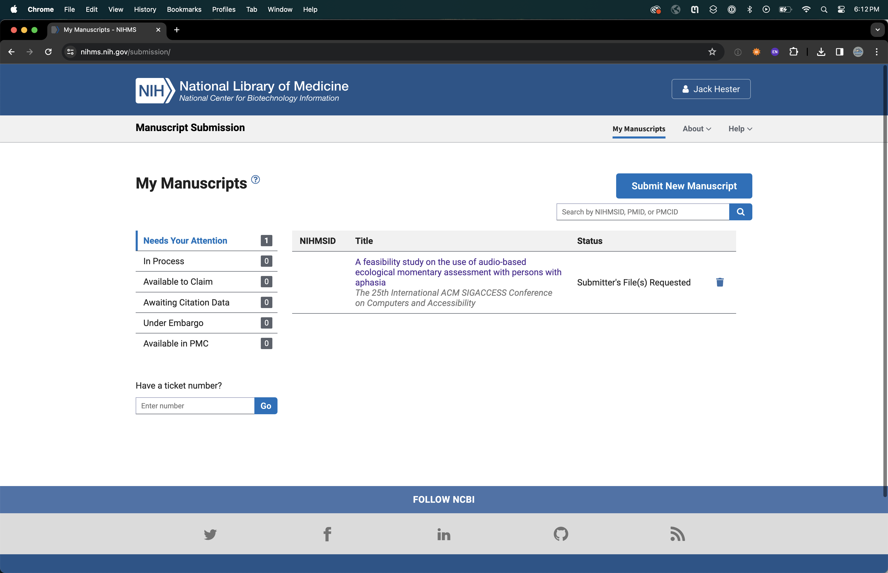

Congratulations on your manuscript being published so much wow! Now you need to have the doi or the other paper information that the databases will ask you for like title author etc. Ok so first you will want to go to the NIH Manuscript Submission System (yes this is the NIHMS system they are the same that is the acronym) and that can be done here or from a google search etc. If you are like me the login options page is confusing but do not panic I will show you where to go to use logins.gov unless the other options are better for you I don't know who you are so many be they are.
Nice job on getting to that page ok now you will see something that looks like this nice picture below but maybe you are not art of era commons or not staff or working for the government so much so where do you click well let me tell you you can click on the all login options button. Ok so this lets you log in with the logins.gov (you know one of the ones you have to use for grants and sometimes taxes) or also your other accounts you might have I have not tried the others but it should also work hopefully and if they do and you write to me I will update this nice page and give you credit yay.
Now you have logged in yais. You should see something that looks hopefully like this other nice picture below but it will not say the title of my paper because it is mine and not yours but that is not important anyway because all you need to do is click the submit new manuscript button and then it will ask you for some information about what you published and the funding and etc.

Now you get to the fun part you can fill in all of the information and upload your nice paper and etc. You probably should also check with the place that published your nice paper so you know how long before it can be public on the website.
Ok hopefully this was so helpful thank you anyway this page might also give you some information about the process and maybe why something went wrong that I would not know.
Oops maybe also you want to know "does my journal get indexed without me having to do this myself and maybe I read this whole page for no reason when I could have had a nice coffee" well I think this page might help but you can't get your time back thanks